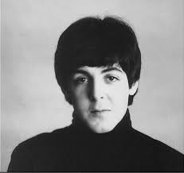
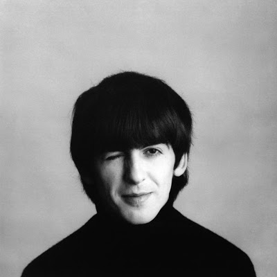
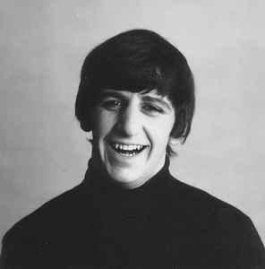

Profil The Beatles
The Beatles merupakan salah satu band rock legendaris yang berasal dari kota Liverpool, Inggris yang dibentuk pada tahun 1960. The Beatles terdiri dari John Lennon (vokalis, pencipta lagu, gitaris, pemain keyboard dan harmonica), Paul McCartney (bassis, vokalis, pencipta lagu dan pemain keyboard) George Harrison (vokalis, pencipta lagu dan pemain sitar) dan Ringo Starr (vokalis dan drummer). Band ini memainkan musik serta menggubah lagu dari berbagai genre dari mulai folk rock hingga psychedelic rock.
 John Lennon John Lennon |
(9 Oktober 1940 - 8 Desember 1980) John merupakan salah satu personil yang paling berpengaruh dalam terbentuknya The Beatles. Sebagai seorang vokalis dan gitaris (sekaligus pemain keyboard dan harmonica), John menciptakan sebagian besar lagu-lagu yang dimainkan oleh The Beatles, lagu-lagu tersebut diciptakannya bersama dengan Paul McCartney. Setelah The Beatles bubar, John menuai kesuksesannya dengan bersolo karir serta menjadi aktivis perdamaian. |
|---|---|
| Paul McCartney | (18 Juni 1942 - Sekarang) Paul merupakan orang kedua yang paling berpengaruh dalam terbentuknya The Beatles. Bersama dengan John, Paul banyak menciptakan lagu-lagu yang dimainkan oleh The Beatles. Sebagai bassis, Paul memiliki kemampuan bermusik yang sama hebatnya seperti John. Setelah The Beatles bubar, Paul menaungi band yang bernama Wings yang aktif hingga tahun 1980an serta aktif bersolo karir hingga saat ini. |
| George Harrison | (25 Februari 1943 - 29 November 2001) George merupakan gitaris The Beatles. Walaupun tidak menciptakan lagu sebanyak John dan Paul, namun George memiliki pengaruh dalam karya-karya The Beatles pada tahun 1966an selanjutnya. Dikarenakan George mampu bermain Sitar (sejenis alat musik dari India) maka beberapa lagu The Beatles memiliki lirik bernuansa filosofis dengan nada-nada yang menyerupai musik dari India. Setelah The Beatles bubar, George aktif bersolo karir. |
|  Richard Starkey | (7 Juli 1940 - Sekarang) Richard memiliki nama panggung Ringo Starr. Ringo merupakan drummer The Beatles. Tidak seperti John, Paul dan George, Ringo tidak menciptakan lagu namun masih memiliki pengaruh tersendiri dalam musik-musik The Beatles. Ada sebuah anekdot yang mengatakan "Jika tidak ada Ringo Starr, maka tidak akan ada The Beatles." Setelah The Beatles bubar, Ringo baru menciptakan lagu, bersolo karir serta menjadi aktor. |